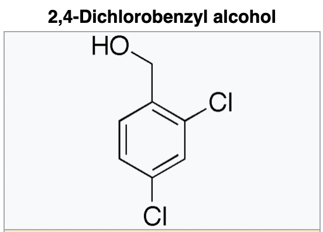
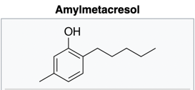
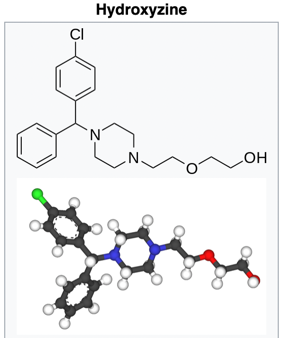
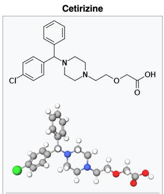
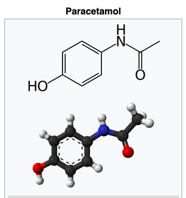

Caught covid last week, got positive report on 2022.04.23.
As soon as I coughed, I ran to get myself tested the very next day.
Because it took me one day to register that coughing was a symptom of COVID the flu.
And I haven’t had a cough in years.
Lol, followed by “ok”. (that’s my defence mechanism, laugh and accept)
My wife actually had to go to a crowded, public hospital to confirm that she has covid, so that she can file for sick-leaves.
I am amazed at Indians’ stupidity.
My daughter had 104.4F fever, I had to put wet-napkins on her forehead to protect her brain from overheating.
2,4-Dicholorobenzyl Alcohol and Amylmetacresol

2,4-Dichlorobenzyl alcohol is a mild antiseptic, able to kill bacteria and viruses associated with mouth and throat infections.
It is a common ingredient in throat lozenges such as Cofsils, Strepsils, Lorsept, and Gorpils.
It is also an ingredient in the European product Neo Borocillina.
A low-pH throat lozenge containing dichlorobenzyl alcohol (1.2 mg) and amylmetacresol (0.6 mg) has been found
to deactivate respiratory syncytial virus and SARS-Cov, but not adenovirus or rhinovirus.Amylmetacresol

Amylmetacresol (AMC) is an antiseptic used to treat infections of the mouth and throat.
It is used as an active pharmaceutical ingredient in Strepsils, Cēpacol, Gorpils and Lorsept throat lozenges,
typically in combination with dichlorobenzyl alcohol, another antiseptic.first generation antihistamine.

Hydroxyzine, sold under the brand names Atarax and others, is an antihistamine medication.
It is used in the treatment of itchiness, anxiety, and nausea, including that due to motion sickness.
Common side effects include sleepiness, headache, and a dry mouth.For sleeping better. I know it is antihistamine, but it works differently for me.
It makes me sleepy. And 25mg one can knock me out too for 10 hours or so. I don’t get headaches from it.
Though I do become irritable the next day, but it also slows down my response, so I am not as offensive as I would be if it only made me irritable.
I have not taken this medicine since July 2020.
second generation antihistamine

For sore throat, as antibiotic. I think I have not taken this in recent years too. But I have it if I need.

Paracetamol, also known as acetaminophen, is a medication used to treat fever and mild to moderate pain.
The recommended maximum daily dose for an adult is three to four grams.
Higher doses may lead to toxicity, including liver failure.
Paracetamol was first made in 1877 or possibly 1852.
It is the most commonly used medication for pain and fever in both the United States and Europe.
Paracetamol is a drug of choice for reducing fever.
However, there has been a lack of research on its antipyretic properties, particularly, in adults.
Paracetamol is used for the relief of mild to moderate pain such as headache, muscle aches,
minor arthritis pain, toothache as well as pain caused by cold, flu, sprains, and dysmenorrhea.
Paracetamol is effective for acute migraine.
Gastrointestinal adverse effects such as nausea and abdominal pain are common, and their frequency is similar to that of ibuprofen.
Increase in risk-taking behavior is possible.for fever and body pain.
For B and C vitamins.
Other name for Vitamin D3.
I wanted to expand on each of these, but I am so tired.
My head rings like a bell on coughing. And it hurts.
Not that I know what a bell feels when it rings, but I would assume that it is painful.
Will update soon.